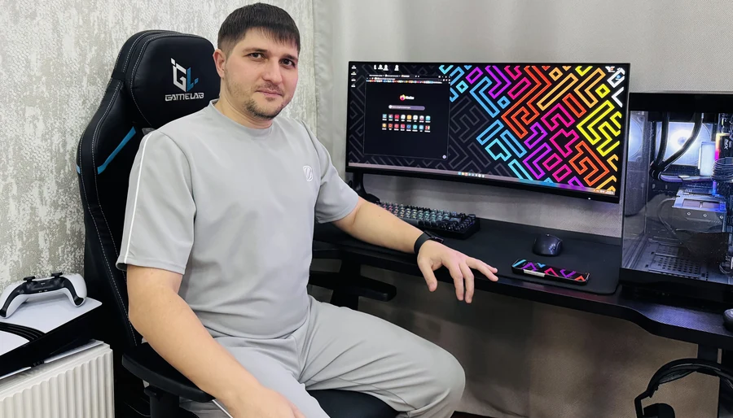

Моя гарантия
Отвечаю за результат и предоставляю гарантию до 1 года.
01Качественный ремонт компьютеров и ноутбуков: цена заранее, бережное отношение к вашим данным.
Выезд по Братску: Центральный, Падунский и Правобережный районы
Стоимость согласую заранее. Никаких неожиданных работ в счёте.
Услуги не найдены. Попробуйте изменить запрос или категорию.
Обратите внимание
Деньги за диагностику не взимаются при последующем ремонте.
Комплектующие: указана только стоимость работы, без запчастей.
Решаю проблему, а не навязываю лишнее.
Отвечаю за результат и предоставляю гарантию до 1 года.
01Согласую цену до начала ремонта - стоимость не станет сюрпризом.
02Приеду на дом или в офис в пределах Братска.
03Бережно отношусь к вашей технике и личным данным.
04
Привет! Меня зовут Дмитрий
Я частный компьютерный мастер в Братске. Работаю напрямую, без посредников и накруток, выезжаю в Центральный, Падунский и Правобережный районы. Ценю свою репутацию: заранее называю точную стоимость работ и бережно отношусь к вашей технике и личным данным.
Оставьте заявку — я свяжусь с вами и уточню детали.